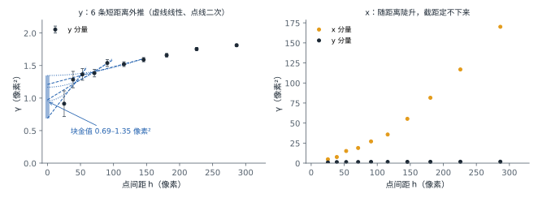

变异函数
例子
沿一条线标注若干点。真实错位 f(s) 随位置平滑变化，每个点的读数 r = f(s) + e 还带着这一次的标注误差。相距 h 的两个点：
r₂ − r₁ = [f(s + h) − f(s)] + (e₂ − e₁)
两点越近，第一项越小；两点挨在一起时，差里只剩两次标注误差。把相距约为 h 的所有点对的 ½(r₂ − r₁)² 取平均，记作 γ(h)。画出 γ(h) 并外推到 h = 0，截距就是 σ²。

原理 若真实错位在空间上连续、标注误差在点与点之间相互独立，则变异函数
γ(h) = ½ E[(rᵢ − rⱼ)²]， |pᵢ − pⱼ| ≈ h
在 h → 0 时趋于 σ²。这个极限在地统计中称为块金值（nugget）。相距 15 像素以内的点对不足 30 对，距离最短的一档平均也相距约 25 像素，块金值只能由短距离段外推得到；比这更小尺度上的真实错位变化也会计入块金值，所以估计值是 σ² 的上界。
计算
- 按 patch 窗口在重叠区影像上的位置，把评测真值点换到重叠区影像坐标（光学 P、SAR Q），取对全局仿射的残差 r = Q − G(P)。G 是该 ROI 由控制点解算出的全局仿射。
- 在同一 ROI 内取全部点对，按光学侧距离 h 分档，每轴计算 γ(h)；13 个 ROI 的点对合并。使用剔除粗差后的 12607 个点。
- 取 h ≤ 60、100、150 像素的档，分别作线性、二次加权拟合，截距即块金值，共 6 个估计。
from scipy.spatial.distance import pdist
h = pdist(P) # 点对的光学侧距离
half_sq = 0.5 * pdist(r[:, [1]]) ** 2 # y 分量的 ½(rᵢ − rⱼ)²
b = np.digitize(h, edges) - 1
gamma = np.bincount(b, half_sq) / np.bincount(b)
结果 y 分量最短一档 h ≈ 25 像素时 γ = 0.91 像素²（43 对），39 像素时为 1.28 像素²（208 对）。6 个外推估计的块金值在 0.69–1.35 像素²之间，即 σ̂y = 0.83–1.16 像素。
x 分量的 γ 在 25 像素处已达 4.8 像素²，随距离陡升，外推截距定不下来。
同一 patch 内的点对与跨 patch 的点对，在相同距离上 γ 一致，x、y 都是如此：不存在逐 patch 的系统标注偏差。

出处
- Cressie N. Statistics for Spatial Data, revised edition. Wiley, 1993.
- Hugonnet R. et al. Uncertainty analysis of digital elevation models by spatial inference from stable terrain. IEEE Journal of Selected Topics in Applied Earth Observations and Remote Sensing, 15, 2022.